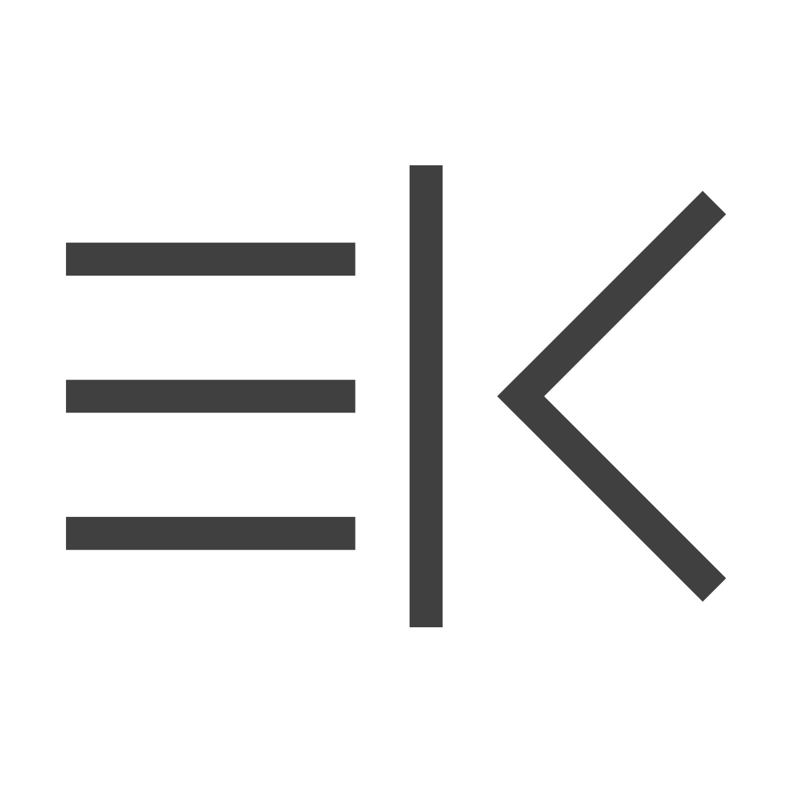
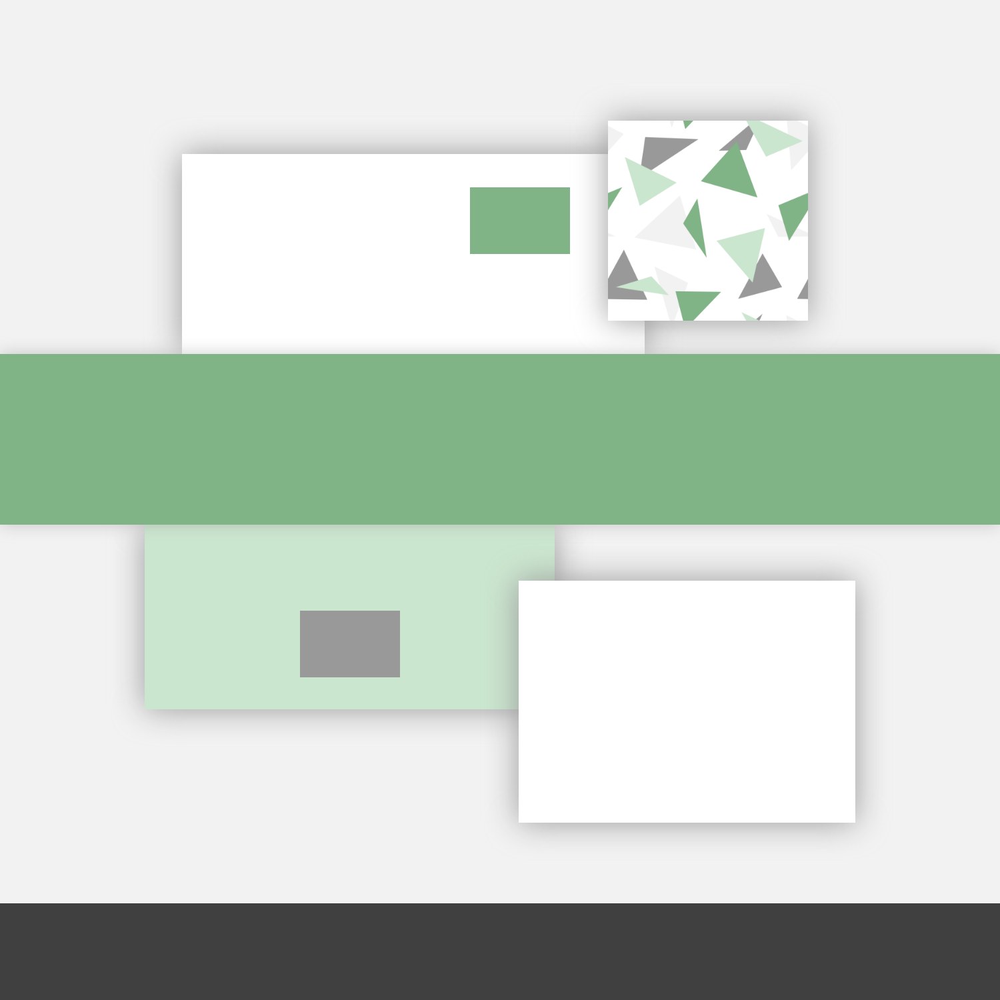
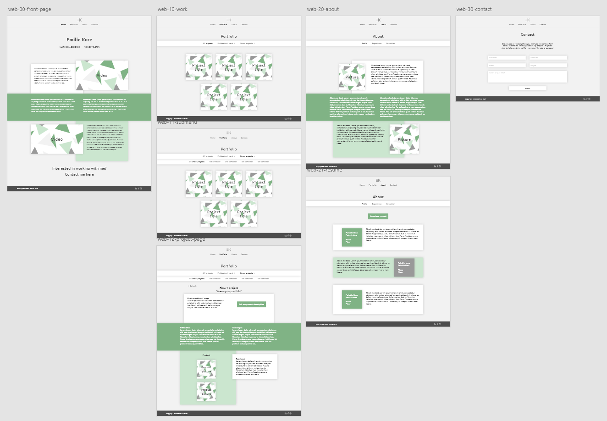

Portfolio
1st semester exam
Flow 5 project
Scope
Based on the aqcuired knowledge from the 1st semester, we were to further develop our portfolio website, thus creating a version 2 of the product from our project from flow 2. Included in the redevelopment we had to remake all of the previous projects from the semester and feature the changes as well as the original products.
Project planning
As part of the exam I had to demonstrate my abilities to plan my project. From experience I knew it would be most beneficial for me to start by creating a Gantt-chart, for which I used teamgantt.com. This made it easy to quickly list, add and reorder tasks, as well as change their duration. Based on my Gantt-chart I created a Work Breakdown Structure (WBS), as well as a Product Breakdown Structure (PBS) and an Objective Breakdown Structure (OBS).
User testing version 1
I decided to test my website from flow 2 with 3 people; one of the students from my class; a very analytical and detail-oriented person; as well as someone who works with webdesign and branding themselves. The feedback was that the dropdown-menus were a bit heavy and outdated, and seemed to be featured only to show my ability to code one more so than for any other reasons. They also seemed more annoying than helpful, because you had to go back down through the menu to get to another section on the same level as you already were and people were more inclined to just click the first menu link, instead of waiting and looking at the dropdown. They liked that my content was divided into manageable boxes, as well as my colour choices and my logo. The content on my front page was percieved as relevant and professional, and the shadow effect on my boxes were also a positive feature.
Style guide
I felt that there was a bit too soft of a contrast between the background and the text color on my first website, so I chose three grey nuances with larger difference in their levels of lightness. Then I chose a light and a dark shade of green, again to create and preserve contrast. I chose green because it symbolises freshness, stability and growth, which is closely tied to the message I want to convey, along with the greys and white which are timeless and symbolises simplicity, elegance and intelligence.
I created my logo back in flow 2, although it wasn't part of the assignment. I wanted it to be based on my initials, EK, while reflecting my function and occupation, and as I sat and brainstormed with some sketches, I realised I could use a burger menu icon as the E. Then I separated the K into the straight vertical line and the bent line, to emulate a pipe and a left chevron symbol. The use of these icons to spell my initials reflects that I both design websites and graphics as well as write code.
I liked my previous font, Maven Pro, which had six different weights but did not include italics. For the sake of versatility I wanted to use a font that included a few different weights as well as italics, also for the added simplicity of being able to use just one font. Then I found the font Ubuntu which came with four different weights and included italics for each weight and also came in a monospace version. This font is very similar to Maven Pro, but use slightly simpler strokes, making it more soft and modern.
I created this mockup of my layout elements to get a feel of how I wanted the site to look. As a part of that I made a pattern in Adobe Illustrator with triangles in different shapes and sizes, and matching the colour scheme of my site. Although initially just a placeholder in my prototype for any visual media that would be included on the actual website, I decided to use the pattern in my project list, to streamline the site so I wouldn't be using different pictures for each project. I only used the darkest grey for the footer element as to not weigh down the rest of the site too much.
Prototype version 2
When I made the prototype I found it fairly easy to actually implement the style elements I came up with in my styleguide, and to alternate the colours of the boxes in a balanced way. I also wanted to alternate between left and right alignment of the boxes, as well as some boxes that fill the entire screen width to create a dynamic and interesting site with a decent amount of variety in the layout. In keeping with this concept I felt it would be more balanced to have two videos on the front page instead of one.
Videos
As a part of the exam I was to make a video to be included as part of the presentation. My initial thought was that I wanted the video to emphasise the purpose of the website, which is the professional protfolio of a multimedia designer. As such, my brainstorming lead to the first video being a (somewhat classic) concept, showcasing me working at my desk and other multimedia related work scenarios. My second video would feature screen saptures of the different programs and skills that I have aqcuired so far during my studies, again to enhance the professionalism of the site.
Source code
When looking at my prototype I couldn't quite figure out how to go about overlapping my boxes of content with the use of flexbox, which was the only system I had used prior to this project. After some research, I found that it might be easier to achieve my vision using the grid-system, although this was completely uncharted CSS territory for me. However with the internet by my side I quickly found my way around the system, and actually had a rather easy time creating my layouts and overlaps and when it came to responsive web design (RWD) it did not require a lot of changes in my CSS. The HTML portion proved no challenge at all, since it's very much the same structure, regardless of using flexbox or grid. I also used nested grid inside my dark green banners, and I used flexbox inside some of my boxes to structure their individual layouts. Additionally I used SASS to make the styling of my site quicker and easier.
Final thoughts
I really do feel like I have achieved a satisfactory product for this project, relative to my own standards and expectations, as well as to the official requirements, and that it came out exactly as I both imagined and planned it to. I am very happy that I created my triangle pattern in Illustrator, because it allowed me to become more familiar with the program, although it was not a required part of the assignment. I really liked the challenge of understanding and learning how to use the grid-system during my coding portion, but also venturing further into RWD. My contact form is not functional, but that is something I will learn to achieve during a later semester.